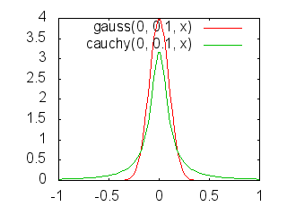
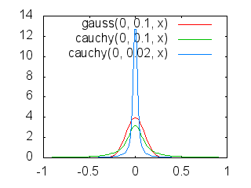

コーシー分布でブラック・ショールズ・モデル？
最初に断わるが、これは失敗した実験の記録である。
実験のアイデアは単純なもの。株価等のコール・オプションを求める 2項モデルの近似式としてブラック＝ショールズ式が使えるが、2項モデルの話は当然、モンテカルロ法でやってもよいはず。そのとき、2項モデルでは、上か下かのランダム二択を使うが、その替わりに正規分布の乱数を使ったり、コーシー分布 (Cauchy distribution)の乱数を使ってみたら、どうなるかやってみよう……というのが今回のアイデアである。
ブラック＝ショールズ式が正規分布のブラウン運動なのだから、正規分布の乱数を使ってみるのは、元の2項モデルと同じ値になりそうだ……とまず考えた。次に、それができるなら、株価の変動は、べき分布(冪分布)だとよく言われるが、べき分布の一つであるコーシー分布の乱数を使ってみたら、ブラック＝ショールズ・モデルにコーシー分布を適用したものになるのではないか……と考えた。
結論を述べれば、正規分布の乱数を使うのは確かに2項モデルと変わらないように見える。モンテカルロ法はかなり粗い結果しか出ないので、そう見えるだけかもしれないが、そう言えそうに見える。一方、コーシー分布を使うのは、分割したときの「ボラティリティ」にあたる値をどうすれば良いかがわからず、うまく適用できなかった。その点から、この実験は失敗だと言える。ただ、コーシー分布を使うと、外れ値が多くなるため、元のブラック＝ショールズ式で求めるオプション価格よりかなり高い価格が必要になることは、なんとなくわかった。
■2項モデルにモンテカルロ法を適用する。
森真『入門 確率解析とルベーグ積分』の p.181 で、二項モデルから、ブラック＝ショールズ式を導いている。そこではちゃんと数値計算で、オプション価格を求めているのであるが、確率を使う部分は、モンテカルロ法を使うこともできる。そこでの式にもとづき、モンテカルロ法で書いたのが test_bs_1.pl になるが、そこから核となる部分を抜き出したのが次のソースになる。(実行には、Math::Gauss という Perl モジュールをインストールする必要があるだろう。)
our $TRIALS = 1000; # 試行数
our $VOLATILITY = 0.1; # ボラティリティ(σ または θ)
our $INTEREST = 0.06; # 無危険利子率
our $INITIAL_PRICE = 18000; # 初期価格
our $STRIKE_PRICE = 19000; # 行使価格
our $TERM = 5; # 期間
our $STEP = 10; # 1期間の分割数
my $U = ($INTEREST / $STEP) + ($VOLATILITY / sqrt($STEP));
my $D = ($INTEREST / $STEP) - ($VOLATILITY / sqrt($STEP));
MAIN_LOOP:
{
our $accume = 0;
for (my $i = 0; $i < $TRIALS; $i++) {
my $price = $INITIAL_PRICE;
for (my $i = 0; $i < $TERM * $STEP; $i++) {
my $x = (rand(1) < 0.5)? (1 + $U) : (1 + $D);
$price *= $x;
}
my $profit = ($price > $STRIKE_PRICE)? ($price - $STRIKE_PRICE) : 0;
my $discounted = $profit / ((1 + ($INTEREST / $STEP)) ** ($TERM * $STEP));
$accume += $discounted;
}
printf("result = %g\n", $accume / $TRIALS);
}
実に単純である。これを実行すると乱数を使っているので毎回結果が違うが、例えば次のようになる。
$ perl test_bs_1.pl
result = 4273.18
estimated = 4167.76
結果に estimated と付いているのは、ブラック＝ショールズ式で求めた場合の近似値である。result は、ざっとやってみて、4287.46、4112.04、4226.1 と変化した。
ボラティリティを大きくすると、かなり結果が不安定になる。例えば σ = 1 にしてみよう。
$ perl test_bs_1.pl --volatility=1
result = 12961.2
estimated = 13819.2
$ perl test_bs_1.pl --volatility=1
result = 6575.58
estimated = 13819.2
■上下二択の替わりに正規乱数を使う。
上のソースで、
for (my $i = 0; $i < $TERM * $STEP; $i++) {
my $x = (rand(1) < 0.5)? (1 + $U) : (1 + $D);
$price *= $x;
}
……とある部分を、次のように替える。
for (my $i = 0; $i < $TERM * $STEP; $i++) {
my $r1 = sqrt(-2 * log(rand(1))) * cos(2 * pi * rand(1));
my $x = 1 + ($INTEREST / $STEP) + ($VOLATILITY / sqrt($STEP)) * $r1;
$price *= $x;
}
これは test_bs_1.pl ではコードが統合されていて、--normal オプションを指定すればよい。
$ perl test_bs_1.pl --normal
result = 4206.13
estimated = 4167.76
何度か実行してみると、result は 4392.41、4334.58、4285.84 などとなる。
上よりも少し値が大きめに出ているようだが、だいたい同じ値と言えるのではないか。
■上下二択の替わりにコーシー分布の乱数を使う。
上のソースで、
for (my $i = 0; $i < $TERM * $STEP; $i++) {
my $x = (rand(1) < 0.5)? (1 + $U) : (1 + $D);
$price *= $x;
}
……とある部分を、次のように替える。
for (my $i = 0; $i < $TERM * $STEP; $i++) {
my $r1 = tan(pi * (rand(1) - 0.5));
my $x = 1 + ($INTEREST / $STEP) + ($VOLATILITY / sqrt($STEP)) * $r1;
$price *= $x;
}
これは test_bs_1.pl ではコードが統合されていて、--cauchy オプションを指定すればよい。
$ perl test_bs_1.pl --cauchy
result = 233875
estimated = 4167.76
何度か実行してみると、result は、145097、855075、747033 となる。
コーシー分布は「ファット・テール」で、裾野が広い。gnuplot で使える形で式を書くと、正規分布の密度関数は次の gauss、コーシー分布の密度関数は cauchy になる。
gauss(mu,sigma,x) = \
(1/sqrt(2 * pi * sigma ** 2)) \
* exp(- (x - mu) ** 2 / (2 * sigma ** 2))
cauchy(mu,theta,x) = \
1/(pi * theta * (1 + ((x - mu) / theta) ** 2))
これまでの実験で使った σ (sigma) = 0.1、θ (theta) = 0.1 の場合を gnuplot でプロットしてみると次のようになる。(プロットのためのソースは test_bs.plt に置いておく。)

実験値を 4167.76 に近くするためには、--volatility を 0.1 だったのを
0.0008ぐらいにすればよいようだ。
$ perl test_bs_1.pl --cauchy --volatility=0.0008
result = 4342.2
estimated = 3924.45
何度か実行してみると、result は、4131.08、4119.11、4475.17 となる。
期間 1 単位を分割する数を増やせば、2項モデルはよりブラック＝ショールズ式に近づく。上でソースを変えた部分を見ると、($VOLATILITY/sqrt($STEP))をかけてるところに $STEP 数に応じて分散を小さくしているところがある。ここが効いて、正規乱数のときは、分割数を変えても結果にあまり変化が生じないようにしていたわけなのだが、これがコーシー分布ではうまくいかない。何かうまくいくための式があるのかもしれないが、私は知らない。そのため、分割数を変えると大きく値が変わってしまう。
$ perl test_bs_1.pl --cauchy --step=1
result = 37781.1
estimated = 4167.76
$ perl test_bs_1.pl --cauchy --step=30
result = 4.577e+06
estimated = 4167.76
■期間 1、期間分割なし……の場合
分割で生じることは、期間を1以上に設定する場合でも起きているはずだ。それはコーシー分布を使った解析としては意味のないものかもしれない。あえて、期間 1、期間分割なしで、数値がどうなるか見てみよう。
まずは、元の2項モデルから、
$ perl test_bs_1.pl --term=1 --step=1
result = 879.698
estimated = 770.17
何度か実行してみると、result は、902.755、895.66、870.83 となる。これに関しては誤差が大きくなるはずで、これで良い。
問題は、正規分布の乱数を使った場合である。少し予想して欲しい。分割しないでも正規乱数になっていれば、同じ値になるのではないか？ そう私は予想した。
$ perl test_bs_1.pl --term=1 --step=1 --normal
result = 673.772
estimated = 770.17
何度か実行してみると、result は、700.349、730.754、710.644 となる。小さめに値が出ている。ちょっと予想と違う。なぜだろう？ 私にはわからないので、誰か教えて欲しい。
そして、コーシー分布を使った場合である。これに関しては、オプション価格がどれぐらい大きな額が必要かが私にとっては気になるところだった。
$ perl test_bs_1.pl --term=1 --step=1 --cauchy
result = 4909.31
estimated = 770.17
何度か実行してみると、result は、4576.42、4140.7、4441.16 となる。かなり大きな値になる。デリバティブ商品としてオプションは実用化されているらしいが、もし、市場がコーシー分布なのに正規分布と考えて値決めしてるとすれば、かなりな大安売りとなるわけだ。
コーシー分布を使った場合で、価格が 770.17 に近くなるのは θ = 0.02 ぐらいにすればよさそうだ。
$ perl test_bs_1.pl --term=1 --step=1 --cauchy --volatility=0.02
result = 701.907
estimated = 202.683
何度か実行してみると、result は、1342.96、578.082、975.943 となる。かなりバラバラな値となる。ちなみに、θ = 0.02 の場合をプロットしてみると、次のようになる。

出っ張ったところに注目しがちだが、大事なのは裾野の高低のようだ。
■マイナスの値はどうすれば良かったのか？
上のソースをいじっていった部分の $x は、正規分布の乱数やコーシー分布の乱数では負値を取りうる。それを現物価格 $price にかけるのだから、現物価格も途中、負値になりうる。
今回は、マイナスになったからといって特別なことはしていない。本来は、マイナスになったとき、なりそうなときは、処理をかえるべきなのだろう。それが今回、悪さをしていた可能性はぬぐいきれない。
■感想
数式等を使って上で言ったようなことが証明できるならとてもカッコイイが、私にはできない。2項モデルからのブラック＝ショールズ式の導出もあやしいが、確率微分方程式を使ったブラック＝ショールズ式の導出は、何冊か本を読んだが、未だ理解できない。
そんな私が、ブラック＝ショールズ式についてレポートを書く意味なんてあるのか、失敗した実験で恥をネットにさらして意味があるのか、……とは思ったが、私の備忘のために記事にしておいた。このブログはあまり人の訪れないブログなので、仮に間違いであってもあまり影響がないだろうとも思ったし。
そういうわけなので、とりあえず謝っておこう。役に立たない記事を書いてしまって、申し訳ありませんでした。
■参考文献
●『入門 確率解析とルベーグ積分』(森 真 著, 東京図書, 2012年)。今回の主な参照先。他にもデリバティブに関する本を読んだが、難しくて私には使えなかった。この本は、ファイナンスの専門書に比べたらわかりやすい。(が、それでも私には難しかったのだが、詳しくは [cocolog:86301445] で書いている。)
●『計算機シミュレーションのための確率分布乱数生成法』(四辻 哲章 著, プレアデス出版, 2010年 2013年第2版)。正規乱数やコーシー分布の乱数はこれを参考にした。
●『不透明な時代を見抜く「統計思考力」』(神永 正博 著, ディスカヴァー・トゥエンティワン, 2009年)。株価の変動がコーシー分布にしたがうとハッキリとは書いていないが、コーシー分布の紹介をしている本。 [cocolog:86808786] でこの本について書いている。
更新：2017-02-05
初公開：2017年02月05日 23:27:06
最新版：2017年02月06日 07:04:32
Comments:
[E:weep] 記事を投稿したあと、マイナスの値について考えてなかったことに気付く。もう記事を投稿してしまってどうにもならなかったので、「マイナスの値はどうすれば良かったのか？」の節を書いてお茶をにごした。
投稿: JRF | 2017-02-06 07:19:17 (JST)
Links: 入門 確率解析とルベーグ積分: https://www.amazon.co.jp/dp/4489021291 test_bs_1.pl: http://jrf.cocolog-nifty.com/archive/perl/test_bs_1.pl test_bs.plt: http://jrf.cocolog-nifty.com/archive/perl/test_bs.plt 計算機シミュレーションのための確率分布乱数生成法: https://www.amazon.co.jp/dp/4903814351 不透明な時代を見抜く「統計思考力」: https://www.amazon.co.jp/dp/4532197082
後方参照 (1 件)
- URL参照 ミクロ経済学になるのかな？… 2017年02月05日